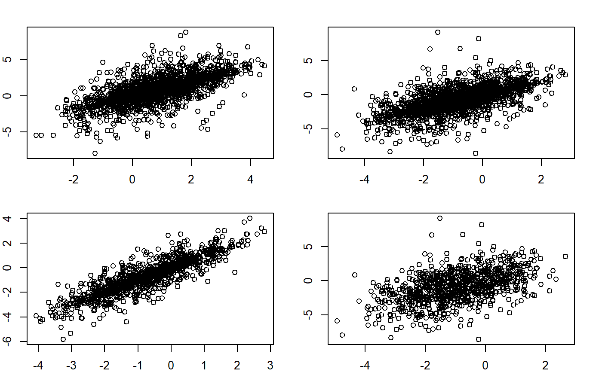

getsignal.RdObtain preference signals for voters.
getsignal(party, ideology, knowledge, difficulty = 3, bias_common = 0, bias_ingroup = 0, pastbias = NULL, idedist_blue_signal_seed = NULL, idedist_red_signal_seed = NULL, capacity_signal_seed = NULL)
| party | The lists generated initially by |
|---|---|
| ideology | The lists generated initially by |
| knowledge | The lists generated by |
| difficulty | The extent of noise level in signal. |
| bias_common | The extent of common directional bias (i.e., positive value advantages red party and vice versa) in signal. |
| bias_ingroup | The extent of common ingroup bias (i.e., Evaluate the ingroup candidate better). |
| pastbias | Currently not used. |
| idedist_blue_signal_seed | The random number seed to draw the signal regarding ideological distance from blue party. |
| idedist_red_signal_seed | The random number seed to draw the signal regarding ideological distance from red party. |
| capacity_signal_seed | The random number seed to draw the signal regarding the capacity of incumbent party. |
The list of signal parameters:
signal The list of signals regarding ideological distance from parties and incumbent capacity.
truth The list of truth regarding ideological distance from parties and incumbent capacity.
seed Random number seeds used.
# initiate ideology, knowledge and party set.seed(30) x <- sample(rep(c(-1,1),each=1000)) ide <- setideology(x, 0, 0.8, 1) kn <- setknowledge(x, 0.60, 0.70, 0.85) par <- setparty() # Get signals sig <- getsignal(par,ide,kn,3) # Difficulty of 3.3 creates approx. 1.9 SD sd(sig$signal$idedist_blue) # around 1.9#> [1] 1.890418sd(sig$signal$idedist_red) # around 1.9#> [1] 1.889055par(mfrow=c(2,2),mar=c(2,2,2,2)) plot(sig$truth$idedist_blue,sig$signal$idedist_blue) plot(sig$truth$idedist_red,sig$signal$idedist_red) plot(sig$truth$idedist_red[kn$p>0.6], sig$signal$idedist_red[kn$p>0.6]) plot(sig$truth$idedist_red[kn$p<0.6], sig$signal$idedist_red[kn$p<0.6])